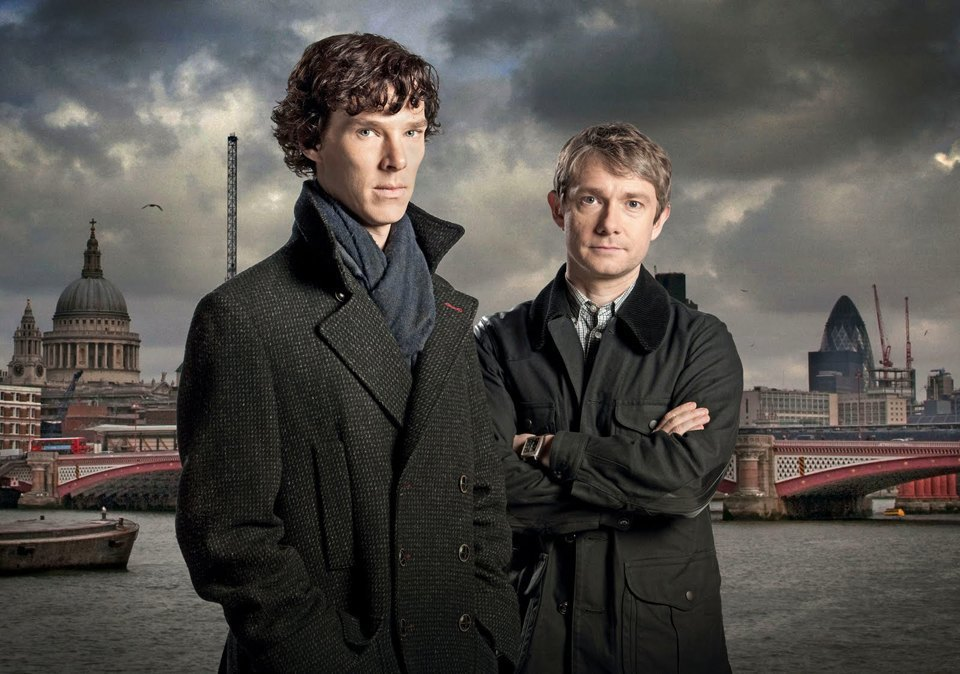

Сериал "Шерлок"
В 2010 году выходит британский сериал «Шерлок». Главные роли исполнили Бенедикту
Камбербэтчу и Мартину Фримену. Зрители приняли сериал, несмотря на то, что герои совсем не
похожи на персонажей автора.
Было выпущено тринадцать эпизодов, четыре серии из трех частей выходили в
эфир с 2010 по 2017 год, а специальный эпизод вышел в эфир 1 января 2016 года.
Действие сериала происходит в
наши дни, в то время как одноразовый специальный выпуск представляет фантазию викторианского периода,
напоминающую оригинальные истории о Холмсе.
Шерлок получил высокую оценку за качество его написания, действия и режиссуры. Он был
номинирован на множество наград, включая Эмми, BAFTA и Золотой глобус, выиграв несколько наград в различных
категориях. Сериал выиграл в трех категориях на 66-й премии Primetime Emmy Awards, включая выдающегося ведущего
актера в мини-сериале или фильме для Камбербэтча, выдающегося актера второго плана в мини-сериале или фильме
для Фримена и выдающегося писателя для мини-сериала, фильма или драматического специального для Моффата.
Через два года он получил награду за выдающийся телевизионный фильм. Кроме того, сериал также был удостоен
премии Пибоди в 2011 году. Третья серия стала самым популярным драматическим сериалом Великобритании с 2001
года. "Шерлок" был продан на 180 территорий стран.
